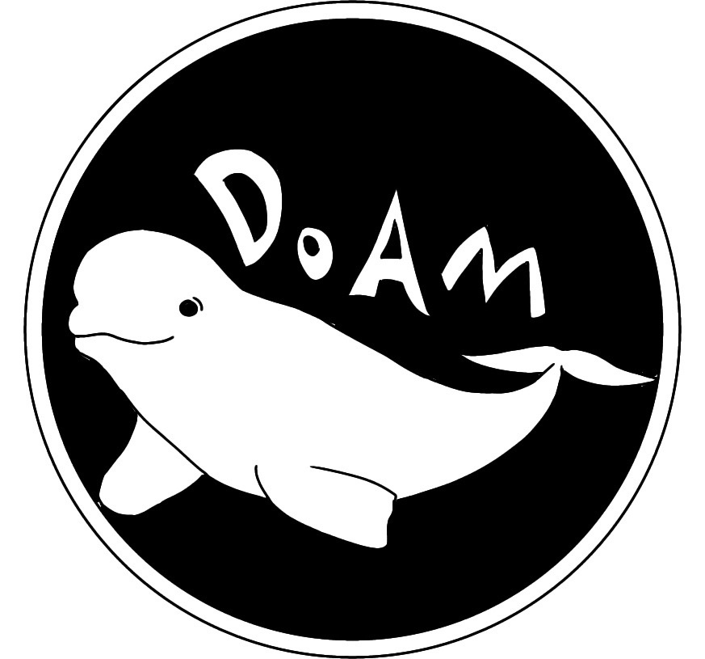

수산생명의학과
수생의
친구들
- 학교 홈페이지
- 교수님 소개
- 수산생물의 생리 및 생태, 해부 및 조직학적 이해와 바이러스, 기생충, 세균, 진균 등 병원체에 대한 이해, 수산 환경 및 수산 약품에 대한 이해를 토대로 수산생물에서 발생하는 각종 질병의 진단과 치료 및 예방대책을 제시하고 식품으로서 안전한 수산물공급에 필요한 전문인을 양성하는데 목적이 있다.